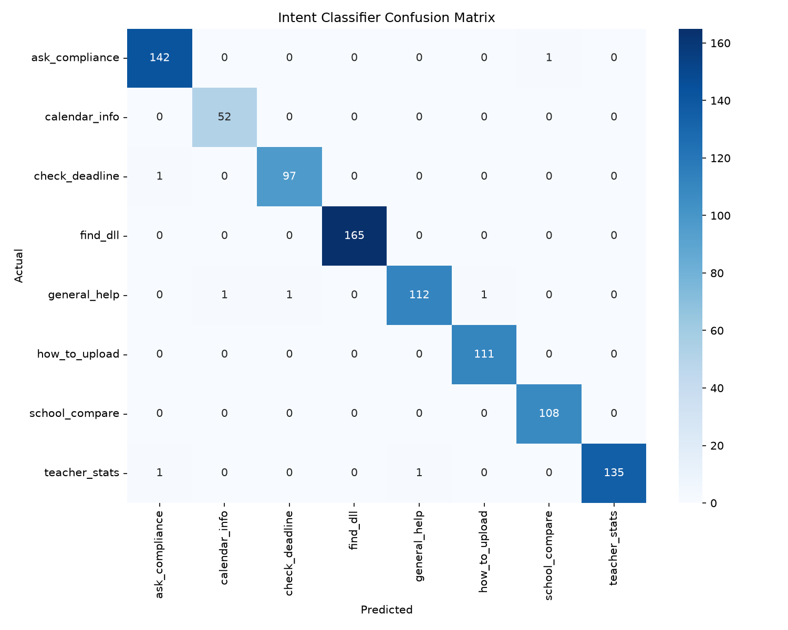
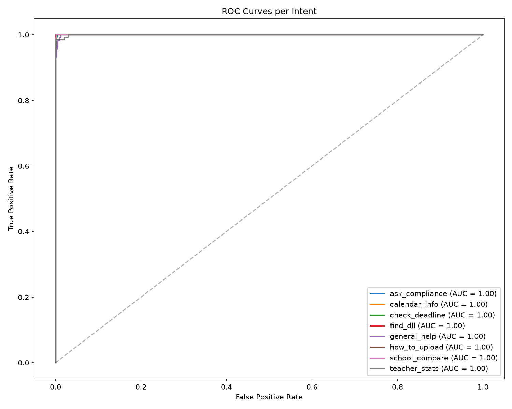
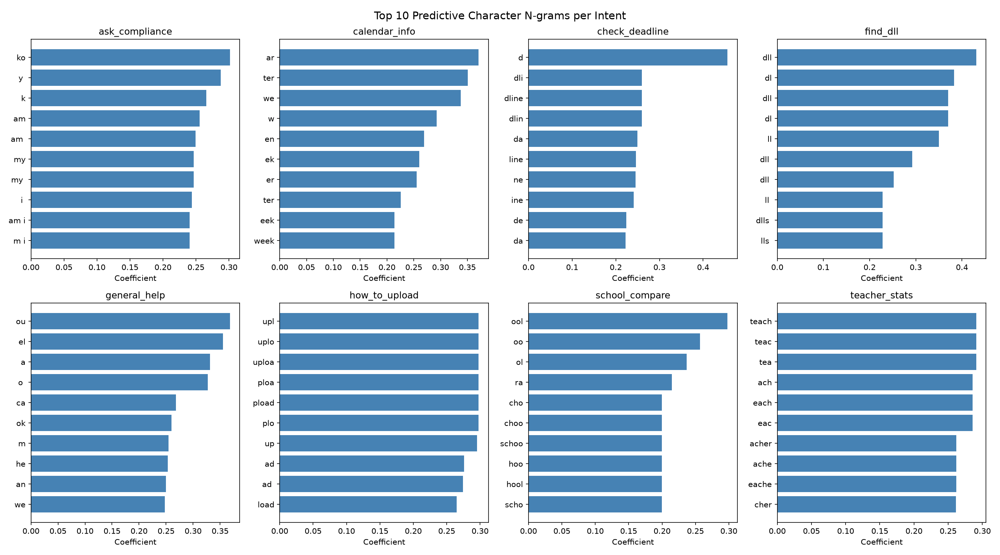

All numeric values are taken directly from the live codebase and recorded training results (chatbot/results/intent_training_results.json, fuzzyClassifier.ts). Dice scores were computed with the system's actual algorithm.
Offline branch: steps 1–5 run identically without internet; the file waits in IndexedDB and resumes at step 6 on reconnect.
Held-out test: 91.88% · 5-fold CV mean: 95.62% ± 2.01%. Folds: 95.31, 97.66, 97.66, 92.19, 95.28 — low variance = stable generalization.
Every corrupted string still scores far above the 25–40% acceptance thresholds (fuzzyClassifier.ts:61,105,205) → correct classification. Exact word matching would score 0% on all of these.
Scored 0–5 against the task's actual requirements (short closed-set headers, OCR noise, no training data, client-side). NB fits none of the constraints; Dice fits all.
Only the LR intent model ships to the browser (~KB-scale JSON). BERT/Word2Vec-class models are 10,000–1,000,000× larger — impossible for offline school hardware. Sizes are typical published figures.
| Criterion | Char n-gram LR ✔ used | Naive Bayes | SVM (word TF-IDF) | LSTM / BERT | Cloud NLP API |
|---|---|---|---|---|---|
| Accuracy on this task | 91.88% test / 95.62% CV | Comparable | Comparable | Higher* | High |
| Runs offline in browser | Yes | Yes | Yes | No | No |
| Trains on 639 samples | Yes | Yes | Yes | Insufficient | N/A |
| Typo / Taglish tolerance | Char n-grams | Word-level OOV | Word-level OOV | Partial | Partial |
| Model size for client | KB (JSON) | KB | MB | 100+ MB | None (network) |
| Recurring cost | ₱0 | ₱0 | ₱0 | GPU serving | Per-call fees |
*Deep models can exceed these accuracies on large corpora, but not on 639 samples, and cannot meet the offline/size constraints. LR wins on the constraints that actually bind.
Same principle applied twice: pick the lightest technique whose assumptions match the data. Neither task needed deep learning; both run 100% client-side.



Generated by chatbot/train_intent_classifier.py · results in chatbot/results/. Confusion matrix shows per-intent errors; ROC curves show per-intent separability; top-words chart shows the strongest character n-grams learned.
Expected peak daily load vs free-tier capacity (log-friendly view). Vercel free ≈ 100k req/day; Supabase free ≈ 500 MB DB (80k submissions/yr ≈ 30–60 MB); B2 bills storage only (~₱40/mo at 100 GB), uploads free, egress free up to 3× storage.